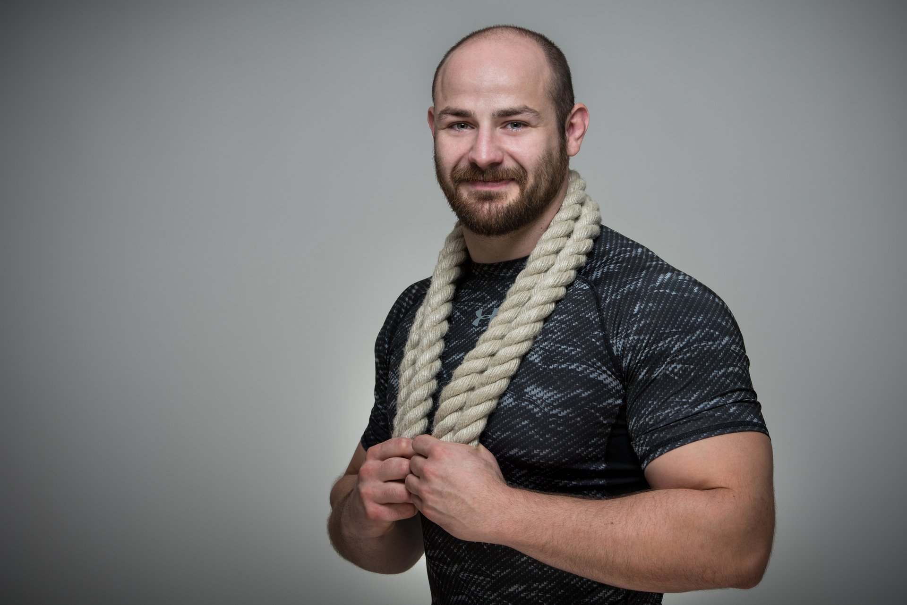

Amiben Segítek
Fogyás/Tömegnövelés
A megfelelő gyakorlatok megválasztásával a testtömeged csökkenésében, vagyis a fogyásban, illetve a testtömeged növelésében, vagyis az izmosodásban.
Mobilitás/Nyújtás
A helyesen végzett mobilizációs és nyújtó gyakorlatokkal a mozgástartományod bővítésében.
Rehabilitáció/Rekreáció
A már megtörtént sérülésed, vagy bármilyen mozgásszervi problémád rehabilitációjában, vagy csak az aktuális egészségi állapotod megőrzésében.
Erő/Állóképesség fejlesztés
Programozott edzéstervekkel, valamint fokozatosan emelkedő terhelésekkel az általános fittséged javításában.
Szakszerű Tanácsadás
Sportolói felkészítés
Minden sportágban eltérő szerepe van a sportoló fizikai képességeinek (erő, gyorsaság, állóképesség, stb.). Ezt szem előtt tartva állítom össze az egyén edzését úgy, hogy különös figyelmet fordítok az adott sportág sérülésveszélyeinek elkerülésére. Olyan gyakorlatokat, gyakorlat elemeket végeztetek a sportolókkal, amik a lehető legbiztonságosabban fokozzák a sportághoz szükséges képesség teljesítményét. Célom ezzel felkészíteni és megvédeni akár a hobbisportolók, akár az élsportolók testét a rájuk nehezedő teherre
Fogyás és tömegnövelés
Attól függően a testösszetételed milyen irányba szeretnéd változtatni, különböző gyakorlatokkal haladunk a célod felé. Ha valaki csökkenteni szeretné testsúlyát, nem szükséges kiegészítő kardió edzést végeznie, hiszen elég, ha az edzésprogram intenzitását emeljük a számára megfelelő szintre. Míg ha valaki izmosodni, hízni szeretne, inkább az erősportokból kiragadott gyakorlatokkal teszem változatossá az edzését. Természetesen a legfontosabb mind a két esetben, a helyes mozgásminta megtanítása, tehát mindent az alapoktól kezdünk, és haladunk a speciálisabb gyakorlatok felé.
Mobilitás/Nyújtás
A testben megjelent fájdalmak, mozgáskorlátozottságok, valamint az erőszint csökkenése, számos okra vezethető vissza. Általában az izmok nem megfelelő állapota okozza, amit a mobilizálás és nyújtás elhanyagolása tesz lehetővé. Helyesen megválasztott és kivitelezett gyakorlatokkal azonban visszanyerhetjük az izomszál hosszát és rugalmasságát. Miután pedig a fájdalom megszűnt, az ízületet körülvevő izmok erősítésével megelőzhetjük az újbóli problémák kialakulását.
Rólam
2015-ben kezdtem el edzőként dolgozni, a sport azonban az egész eddigi életemet végig kísérte. 16 évig versenyszerűen atletizáltam, korosztályos országos bajnok voltam súlylökésben és többször dobogós súlylökésben és diszkoszvetésben egyaránt. Sikerült eljutnom a válogatott szintig is. Ez idő alatt kialakítottam egy olyan sajátos edzéstechnikát, amelyben különböző edzésfajták elemeit ötvöztem. Ennek köszönhetően sokkal több lehetőségem volt egy adott készségemet vagy képességemet fejleszteni. Mivel az élsportolók számos veszélynek vannak kitéve, a sérülések kockázata is megnő a körükben. Személyes tapasztalatokra alapozva, saját magamon kísérleteztem ki a működő gyakorlatokat, és próbáltam a lehető legbiztonságosabb módszerekkel felépíteni újra a testemet. A célom az lenne, hogy olyan mozgásmintákat tanítsak másoknak, amit szerintem mindenkinek kötelező lenne készség szintjén elsajátítania, mivel ezekkel a mindennapi életüket tehetnék könnyebbé. Valamint, hogy szakmai tudásomat folyamatosan bővítve mindenki számára változatos és hatékony edzéstervet állítsak össze. Fő szempontom, hogy vendégeim ne csak jóérzéssel távozzanak tőlem, hanem az edzés az egészségük javára is szolgáljon!
Videók
1 perc guggolás
A guggolás helyes kivitelezésének segítő videója. Ha szeretnél részt venni intenzív, változatos edzéseimen, helyesen kivitelezett gyakorlatokkal, keress bátran!